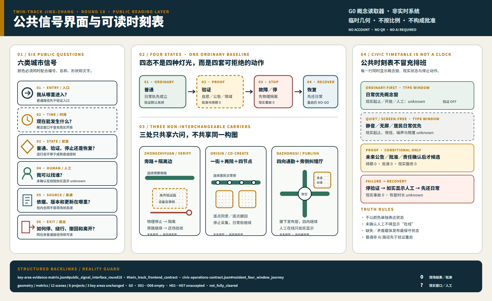
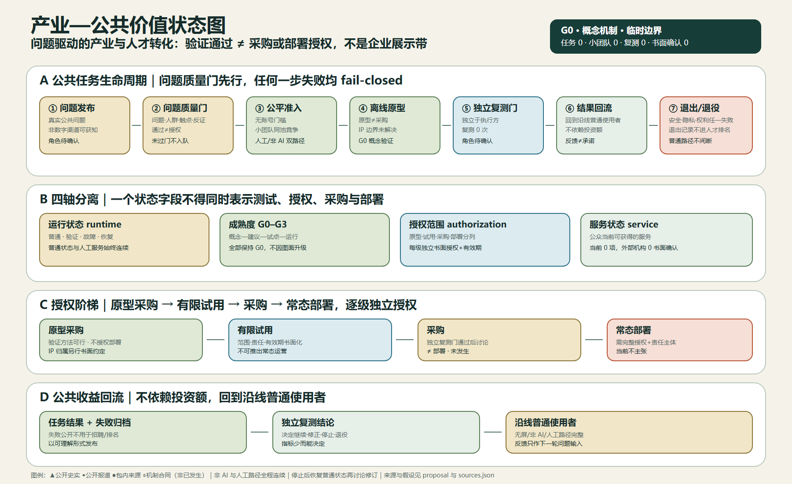
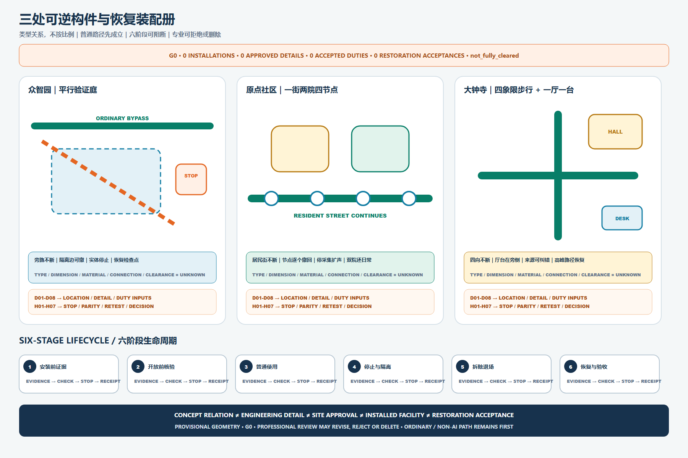
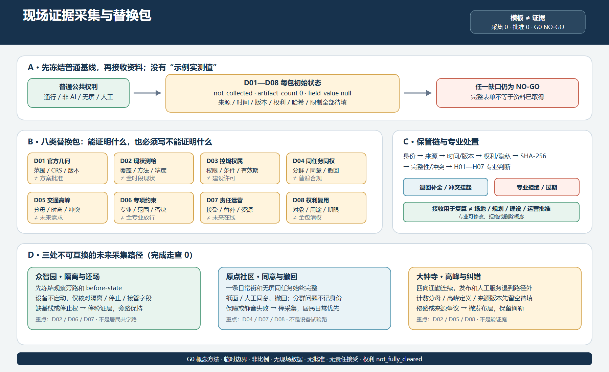

看图 01：双轨、三处原型、失败侧线、六类信号，以及临时边界。
30 秒入口 · G0 · 三框分读 · 不按比例
双轨京张：普通生活连续，验证只在旁侧出现

一个概念：连续日常轨让普通任务始终可完成，间歇验证轨只作自愿、限域、可停止的旁侧叠层；众智园 VERIFY、原点社区 CO-CREATE、大钟寺 PUBLISH。一个边界：全案仍为 G0、provisional geometry，图面清楚不等于场地准确。
沿前台六段依次阅读：封面—普通生活—四态旅程—三处空间—公共信号—专业交接。
展开证据库，逐项核查 D01—D08、H01—H07、权利、来源与重算触发。
展开三框场地依据与临时边界说明
移动端可在图内横向浏览；下方三框卡片提供等价文字读法。

公开报道只用于提出现场问题；不能证明竣工、可达、容量、权属或准确线位。
PROV-SITE-001 与三处 PROV-KEY 只用于概念组织和 intake 自检。
只表达任务接力、旁侧验证、人工交接、停止、恢复与退出；不表达坐标、距离或建设顺序。
未裁决，不静默修图：既有 OSM 背景核查记录 0% 相交与约 412.5 米间距，但不能据此改官方未知的边界；
PROV-KEY-003 仍未与大钟寺站、道路、地块或建筑锚定。本轮不平移 geometry。另一份维护者背景记录（2026-08-14）按公告四条街道中线读数，登记边线东偏 533–898 米（均值约 667 米），同样只作背景记录，不反向升级、不阻断评分。结构化合同：JZ-SITE-READING-R17。3 分钟阅读 · 普通任务优先 · 合成概念图
不注册、不扫码、不使用 AI，也能完成同一普通任务

完整非 AI 路径：实体导向、无屏信息、连续无障碍意图路径、纸面或口头说明、人工交接和清晰退出先独立成立。
三处不复制：众智园保护旁路，原点社区保护居民日常与撤回，大钟寺保护通勤和来源纠错。
生成、权利与机器证据
评审动态 · 用户启动 · 48 秒 · 静音 · G0
同一普通任务：普通 → 验证 → 故障 → 恢复
同一条连续日常轨在四态中保持可见，只有旁侧验证层出现、停止／隔离，再成为恢复候选。每态 12 秒、总计 48 秒只是界面节奏，不是现实恢复时长；页面不自动播放，必须由按钮启动。
普通
日常轨、无屏信息和人工服务可用；验证关闭。
验证
自愿、公告、限域；同任务非 AI 对照仍在旁侧。
故障 / 停止
自动化停机，人工接管；公众绕行、询问或离开。
恢复
先还原普通路径和服务；未闭合则保持 G0 或退出。
静止于 01 普通
静态替代： 上述四张卡即为完整文字稿；禁用 JavaScript 时全部可读。系统启用“减少动态效果”时不计时，只按按钮逐态查看。现实事故、恢复时长、班次、验收和 GO 决定仍为 0 或 unknown。结构化回链：jury-motion-journey.json。
三处共享公共底线，不共享空间构图
三座不可互换的换轨场
平行双带、设备隔离边、实体停止点；故障对象是旁侧验证庭。
一街两院四节点、逐点撤回；故障对象是单个可选节点。
四向通勤十字、路外发布厅与人工台；故障对象是服务支线。
移动端仅在标注容器内横向浏览；上方三段文字提供等价空间读法。


展开三处完整对照与限制
读取三处普通任务、人工交接、故障对象、恢复对象和缺失资料对照。图件不证明现状建筑、站点锚定、设施、批准或建成结果。
第 18 轮 · G0 示意 · 非实时系统
公共信号界面：三载体 × 四态 × 六问
同一组入口、时段、状态、人工、来源与退出信号，在三座换轨场承担不同空间职责。选择场地与状态可定位对应读法；交互只读取下方静态表，不联网、不采集、不计算现场结果，也不把概念时刻表写成真实排班。

G0 概念态 · 众智园 · 普通概念载体：连续观察绕行 + 关闭的隔离验证边非现状记录 · 设施、精确位置、人工和运行均未建或未确认
入口信号
概念实施时，主路径应进入连续观察绕行，验证庭入口应实体关闭；均非现状设施。
时段信号
概念规则以日常使用为默认；真实开放时段、值班与静音参数 unknown。
状态信号
概念普通态；验证叠层关闭；全部场景仍为 G0。
人工信号
概念中的人工接管点类型已定义；确认人员、班次和责任主体均为 0。
来源信号
纸面说明回链既有证据；现场校核与批准均为 0。
退出信号
沿同一无屏绕行离开；无需账户、扫码或 AI。
现实读数：人工在线 0 · 已确认时段 0 · 现场测试 0 · 批准 0 · GO 0 · G0 · 临时几何 · 权利 not_fully_cleared · 概念显示不等于现场状态
完整静态替代：展开三处 × 四态的 12 行信号合同
| 场地 | 运行态 | 概念载体 | 入口 | 时段 | 状态信号 | 人工 | 来源 | 退出 |
|---|---|---|---|---|---|---|---|---|
| 众智园 | 01 普通 | 连续观察绕行 + 关闭的隔离验证边 | 概念实施时，主路径应进入连续观察绕行，验证庭入口应实体关闭；均非现状设施。 | 概念规则以日常使用为默认；真实开放时段、值班与静音参数 unknown。 | 概念普通态；验证叠层关闭；全部场景仍为 G0。 | 概念中的人工接管点类型已定义；确认人员、班次和责任主体均为 0。 | 纸面说明回链既有证据；现场校核与批准均为 0。 | 概念实施时应可沿同一无屏绕行离开；无需账户、扫码或 AI。 |
| 众智园 | 02 验证 | 连续绕行 + 旁侧隔离验证边 | 概念验证态只允许日常绕行保持，并从旁侧自愿门进入隔离验证边；现实入口为 0。 | 公告、批准且责任人到位后才可开窗；当前确认窗口为 0。 | 验证候选；设备与人流限域；成熟度仍为 G0。 | 人工接管须在物理停止前可达；确认人员和值班为 0。 | 显示待测对象、方法、来源与停止条件；现实测试为 0。 | 概念规则要求可随时回到绕行或离场；拒绝不影响日常任务。 |
| 众智园 | 03 故障 | 连续绕行 + 已隔离的失败侧线 | 若未来发生故障，概念规则要求验证入口实体关闭并隔离，连续绕行不得被阻断；现实故障为 0。 | 触发即停止；现实故障事件为 0，恢复时长 unknown。 | 故障 / 停止；界面不得假装服务仍在运行。 | 显示人工接管责任类型；确认责任主体仍为 0。 | 冻结故障记录与来源版本；现实记录为 0。 | 概念规则要求非 AI 绕行继续，并可询问、申诉或离开。 |
| 众智园 | 04 恢复 | 恢复规则：绕行优先 + 验证边继续关闭 | 未来恢复只可先恢复连续绕行并继续关闭验证入口；现实恢复验收为 0。 | 还场与独立复测闭合后才可候选；现实决定为 0。 | 恢复候选；缺一项即 NO-GO，不自动回到验证。 | 未来责任角色签收恢复材料；签收不等于场地批准。 | 还场材料、维护关闭与独立复测均保持 pending。 | 概念规则要求普通路径完全可用后，才讨论是否重开验证。 |
| 原点社区 | 01 普通 | 一条日常街 + 两院 + 四个关闭的无屏节点 | 概念实施时，一条日常街须保持连续，四节点可全部无屏关闭；现状构型与位置 unknown。 | 居民日常与静音优先；真实开放和服务时段 unknown。 | 概念普通态；节点可分别关闭，不影响街与两院。 | 纸面、口头与人工接口类型已定义；确认人员为 0。 | 问题来源与同意边界可读；现实居民提交为 0。 | 概念实施时应可沿同一街或两院离开；不注册、不扫码。 |
| 原点社区 | 02 验证 | 连续日常街 + 单节点自愿验证 | 概念验证态一次只允许激活一个旁侧节点，不得占用日常街与两院；现实节点为 0。 | 公告、居民同意且可撤回后才开窗；当前窗口为 0。 | 局部验证；其他节点及居民日常继续。 | 纸面或口头同意与撤回由人工解释；确认人员为 0。 | 说明问题来源、用途与不采集默认；现实输入为 0。 | 概念规则要求节点级即时无惩罚撤回，并回到日常街。 |
| 原点社区 | 03 故障 | 故障规则：连续街院 + 退出单节点 | 若未来单节点故障，概念规则要求只隔离该节点，其他节点、街与两院继续；现实故障为 0。 | 触发即停；现实节点故障事件为 0。 | 故障只落在所选节点，不把社区整体标为失败。 | 人工说明、纠错与申诉接口保留；确认人员为 0。 | 故障原因、影响范围与记录均待真实事件填写。 | 概念规则要求离开节点即回居民日常，撤回继续有效。 |
| 原点社区 | 04 恢复 | 恢复规则：街院持续 + 节点待复核 | 日常街与两院普通使用始终持续；未来只清除并恢复受影响节点，现实验收为 0。 | 居民确认、节点还场与独立复核后才候选；现实验收为 0。 | 只恢复受影响节点；未闭合则保持关闭或退役。 | 未来居民、维护与复核角色分别签收，不互相替代。 | 节点还场回执、同意状态和复核材料均为 pending。 | 概念规则保持撤回权，节点可不重开并进入退役。 |
| 大钟寺 | 01 普通 | 四向连续通勤 + 路外关闭的一厅一台 | 概念实施时，四向步行须直达，一厅一台只可候选布置于通勤流线之外；精确锚点 unknown。 | 通勤与静音优先；真实时刻表、班次与人员 unknown。 | 概念普通态；发布与验证叠层关闭，仍为 G0。 | 双入口人工台是服务类型；确认点位与人员为 0。 | 未来实体板须说明来源状态 unknown，不冒充已发布成果。 | 概念规则要求四向路径持续可用，不因服务关闭而绕行。 |
| 大钟寺 | 02 验证 | 四向连续通勤 + 路外发布 / 服务界面 | 概念验证态必须保持通勤不变，只允许公众自愿转入路外一厅一台候选；现实设施为 0。 | 只在已公告、已批准窗口候选；现实窗口为 0。 | 发布 / 服务候选；文件可读不升级 G0。 | 人工台负责来源与队列纠错；确认人员为 0。 | 显示版本、范围、限制和回链；现实发布为 0。 | 概念规则要求可随时回到最近通勤方向或直接离开。 |
| 大钟寺 | 03 故障 | 故障规则：四向通勤 + 关闭服务支线 | 若未来发生故障，概念规则只关闭厅台与服务支线，不得关闭四向步行交叉；现实事故为 0。 | 触发即停；现实事故、拥堵或来源错误事件为 0。 | 故障仅影响旁侧叠层，不把通勤标为中断。 | 未来人工台受理纠错与申诉；当前在线为 0。 | 未来须张贴纠错告示并冻结版本；不得静默改写。 | 概念规则要求四向路径保持开放，公众可绕过厅台离开。 |
| 大钟寺 | 04 恢复 | 恢复规则：通勤先核 + 厅台待复核 | 未来恢复只可先核验四向步行，再让厅台进入恢复候选；现实验收为 0。 | 来源纠错、可达、队列与还场闭合后候选；现实为 0。 | 恢复 / NO-GO；未闭合不得重新发布。 | 未来发布、服务、维护与复核角色分别签收。 | 未来须显示修正版本、复核范围与未关闭限制。 | 概念规则要求任何重开前，通勤连续与无服务退出先成立。 |
结构化回链：key-area-evidence-matrix.json#public_signal_interface_round18 · civic-operations-contract.json · site-grounding-register.json#public_signal_interface_round18。本界面只使既有合同可读，不新增场景、项目、几何、设施、排班、批准或现实结果。
评审收束与专业深化交接
评审收束：
先读“一概念、三原型、一内核”，再用六项任务核对证据，最后把 D01—D08 现实缺口交给七类专业。评审收束不新增品牌、场景、项目、geometry 或成熟度；任何重大缺口继续 NO-GO。
包内导航与评审交接索引
本包 141 个路径的评审定位统一见 review-handoff-index.json：七条阅读路线（30 秒／3 分钟／15 分钟、五步可访问漫游、21 个章节单元、D01—D08/H01—H07 交接、八问冷读）与逐文件登记（现行／历史快照／机器输入／冻结／临时五种状态、语言对、轮次来源与权利回链）。索引只负责定位，不生成新证据、不改变成熟度或权利状态。
| 阅读路线 | 入口 |
|---|---|
| 30 秒：一个概念与一个边界 | proposal.md 一句话判断 · 封面与三框总图 |
| 3 分钟：一个普通任务的完整非 AI 旅程 | 本页 普通生活 · 四态 · 公共信号 |
| 15 分钟：逐对象追证与证据库 | 本页 专业交接 · 五步漫游 · 索引进阶登记 |
| D01—D08 / H01—H07 专业交接 | implementation-handoff-matrix.json · field-evidence-intake-contract.json · readiness-closure-contract.json |
| 八问冷读（仅编辑复核） | 前台正文 + 本页六段 + A3/A0（逐问入口见索引） |
状态标注：round15-baseline.json 为历史快照；t02-g0-g1-replay-fixtures.json 为合成回放机器输入；全部 geometry 保持临时约束并冻结哈希；现行计数以 manifest 与权利台账为准。

双轨京张、三处不可互换原型、JZ-AIOS、四条状态轴、七项公共权利和既有编号。
临时几何、类型化占位、角色类型、未核验来源与内容；不得修改官方或锁定图层来迁就方案。
containment、面积、路径、图注、双语 HTML/PDF、manifest 和逐文件权利摘要全部同步。
专业冲突、同任务共测、停机恢复、独立复测和权利授权；任一重大缺口维持 NO-GO。
| 当前现实计数 | 专业接手的第一动作 | 不能被替代 |
|---|---|---|
| 权威替换材料 0 · 专业责任接受 0 · 99 槽提交 0 · 批准 0 · 现场测试 0 · GO 0 | 选择一个既有项目或场景，向 H01—H07 提交真实、可追踪材料；不新增场景 ID 绕开缺口。 | 概念图≠规划判断；绿线≠无障碍合规；OSM≠边界/交通；合成 PASS≠现实表现；活动日历≠责任与预算。 |
结构化回链：visual/assets/implementation-handoff-matrix.json#review_synthesis、#agent_task_review_crosswalk、#official_data_replacement_register、#professional_discipline_matrix。
展开 15 分钟后台证据：合同、场景、指标、权利与来源
G0 · OFFLINE · NO ACCOUNT · NO AI REQUIRED
后台五步可访问证据漫游
这是 15 分钟追证入口，不是前台 3 分钟路径；按空间—三原型—普通任务—故障恢复—专业 NO-GO 阅读，交互只负责定位，呈现不是证据。
静态回退： 无 JavaScript 时，以下五步、限制与证据回链仍全部展开。
1 / 5 · G0
先分三框，再读双轨关系
为什么不能把三类信息拼成一张现实总图？
公开背景只供定位，临时容器只供组织，双轨只表达任务接力；三者绝不套准成现实场地图。连续日常轨先成立，验证只在自愿、公告、限域且有责任人的条件下旁侧出现。
边界： 先分三框，再只在设计关系框读取双轨；G0 图式不证明连续占地、既建设施、铁路结论、站点锚定或审批边界。
2 / 5 · G0
比较三种不可互换的公共空间原型
为什么三处不能机械复制？
众智园用平行验证庭隔离设备并保留人工接管；原点社区以一街两院四节点支持无屏共学和逐点撤回；大钟寺以四象限步行、一厅一台守住通勤连续与人工服务。
边界： 体量、构件与位置均为概念类型；PROV-KEY-003 不是大钟寺站域平面，尺寸、材料、连接、专项核验、消防、铁路保护与市政结论仍 unknown。
3 / 5 · G0
先完成一个不依赖 AI 的普通任务
不注册、不扫码、不使用 AI，公众能否完成同一任务？
可以。无屏入口、连续非 AI／无障碍意图路径、人工站房、纸面或口头说明和清晰离开路径构成完整主路径；AI 只作为旁侧可选叠层。
边界： 这是合成概念图，不是现场照片、确认视点、无障碍合规结果、运营证据或人员承诺。
4 / 5 · G0
沿普通—验证—故障—恢复读一次连续旅程
失败发生后，谁停、谁接管、如何恢复？
物理停止优先于界面提示；人工接管、隔离和非 AI 绕行立即保住普通任务。只有恢复材料、居民确认、维护关闭和责任复核齐备，验证叠层才可重新候选。

边界： 合成回放 PASS 只证明文件合同可重放；现实事故、恢复时长、班次、场所验收与 GO 决定均为 0 或 unknown。
5 / 5 · G0
把概念交给真实资料与专业 NO-GO
哪些内容必须被替换，谁有权拒绝？
D01—D08 真实资料替换临时几何、类型占位与未核验来源；H01—H07 专业复算、核验责任并可修改、拒绝或删除概念。重大缺口、权利不清或普通权利受损时保持 NO-GO。
边界： 文件、图件、机器检查、PR 审查或合并均不构成规划判断、专业责任接受、现场批准、运营成绩或权利许可。
D01–D08 · H01–H07 · 12 SCENES · 8 PROJECTS · 3 KEY AREAS · 99 CLOSURE SLOTS · G0 · not_fully_cleared · PROFESSIONAL MAY REJECT/DELETE
双轨京张：前台空间总纲 / Twin-track Jing-Zhang
先读空间，再读治理：
连续日常轨是任何人都能进入的普通公共生活底盘；间歇验证轨是自愿、公告、限域、可拆除的短段叠层，不能被理解为连续建设或已建验证设施。三处换轨场分别承担共创、验证、发布；失败侧线负责停止、人工接管、绕行和恢复。无需注册、扫码或使用 AI。
返回图 01 三层场地读取总图；本节只展开其空间语法，不重复放置同一图件。
入口、步行、通勤、休憩、办事和离开连续开放；人工站房、无屏节点和非 AI 完整路径始终可用。
只有自愿、公告、批准、有责任人的限域时段才出现；验证叠层间歇、可停止、可拆除，不占用日常通行。
原点社区接入共创与评议；众智园承接离线验证；大钟寺承接公共发布与人工服务。三处均为既有临时重点区的概念角色。
普通—验证—故障—恢复四态可读；入口、时段、状态、人工、来源、退出六类信号把“现在能做什么”说清楚。
| 普通 | 验证 | 故障 / 停止 | 恢复 |
|---|---|---|---|
| 日常轨开放；验证设备关闭。 | 自愿进入公告时段；日常轨和非 AI 对照仍在旁侧。 | 自动化停机；人工接管，进入失败侧线，公众可绕行或离开。 | 纠错、责任交接、独立复测未闭合前保持 G0；闭合后还原普通。 |
结构化回链：visual/assets/key-area-evidence-matrix.json#twin_track_frontend_contract；该合同只记录概念空间关系、公众旅程、时段和成熟度护栏，不新增场景编号、几何或现场成绩。JZ-AIOS、G0—G3、T-02、证据门和权利台账继续在后续章节作为后台治理内核。
非 AI 优先公共城市：七项权利与同任务双路径
先有不依赖技术的完整服务，再谈可选 AI：
公众从实体权利图例进入，沿纸面、口头、实体导视和人工主路径完成基本任务；AI 只是在易懂披露和单独自愿同意后的可选支线。两条路径必须汇入同一结果、费用规则、责任队列、申诉纠正和停止恢复。这里的“永久”是未来服务窗口不得删除的设计权利，不是现状值班或批准声明。

无需账户/扫码、完整非 AI、连续无障碍意图、人工交接、同意撤回、申诉纠正、无屏安静。现场无障碍合规仍待勘测、共测和专业复核。
众智园以设备隔离和接管恢复为核心；原点社区以无屏共学、口头/纸面撤回和居民日常为核心；大钟寺以四向通勤、来源纠错和双入口人工台为核心。
老年人、残障/行动不便者、低数字素养者、无账户/无智能设备者分别记录完成、放弃、断点、等待、交接和权利实现，不能被总体平均掩盖。
硬性失败停止自动化，不赋予 AI 继续权；普通路径和非 AI 任务保留，或给出安全拒绝与人工转交。独立复测和还场未闭合则保持停止或退役。
| 可核验文件覆盖 | 现实计数 | 仍待提交 | 当前决定 |
|---|---|---|---|
| 7 项权利 · 3 处合同 · 4 类群体 · 6 条旅程 | 运营主体 0 · 人员 0 · 现实交互 0 · 已知群体结果 0 | 地点、时段、责任主体、无障碍复核、样本、阈值、现场记录、独立复测 | 全部 G0；不允许成熟度升级 |
机器可审计入口：visual/assets/non-ai-parity-contract.json 与 key-area-evidence-matrix.json#non_ai_first_public_city_contract。临时 geometry、现有场景编号和 not_fully_cleared 权利状态不变。
维护型城市：普通问题怎样回到普通日常
AI 不是进入条件：
居民可从普通、人工或非 AI 路径提出问题；图中“问题壳”和“工单壳”只是待填结构，不是已收集投诉或已派发工单。责任接受前不生成现实工单，独立复核后才能继续；重复故障、无安全人工路径或无法恢复日常时必须停止并进入退役复核。

顺序固定为检查 → 清洁/调整 → 维修 → 可维修部件替换 → 最后才讨论采购。图中没有预算数字、采购清单或已建设施。
维修、保洁、有人值守服务、策展和无障碍共同测试都进入责任与复核链；这些是所需角色类型，不代表人员已经确认。
真实投诉、工单、预算、人员、修复、复核、成效、批准和运营均为 0；计划与实际人工工时为 unknown。全部场景仍为 G0。
机器可审计入口：visual/assets/key-area-evidence-matrix.json#maintenance_urbanism_contract。该合同只组织既有 12 个场景和八个项目，不新增场景、几何、成熟度、批准、人员或现实服务。
AI 城市代谢账本：先看完整负担，再谈“更绿色”
字段覆盖不是环境成绩：
十二个既有 G0 场景都获得七类资源护照，但当前没有一个有效任务分母，也没有能源、算力、设备寿命或人工分钟实测。供应商、责任接受、采购和退出条款均未确认；行业均值、设备铭牌、模拟值和供应商材料不能冒充项目数据。

算力、能源、设备材料、数据、人工复核、供应商依赖、失败退出成本必须在同一任务分母下解释；不能只报服务器或模型。
众智园突出设备/电池、事故记录和接管；原点社区突出同意撤回、共享设备、保障与清场；大钟寺突出路线/来源更新、人工台和四向通勤。
保留、维修复用、异地部署、供应商回收、合规处置、数据与日志关闭、普通场所和同任务服务恢复，均需责任与证据。
not_measured、external_confirmation_required 等状态必须写明理由和替换证据；100% 字段覆盖不能解释成节能或可实施。
| 设计覆盖 | 现实证据 | 硬性 NO-GO | 授权边界 |
|---|---|---|---|
| 12 场景 · 7 资源 · 7 类退出去向 | 有效分母 0 · 实测能源 0 · 实测算力 0 · 人工分钟 0 · 供应商 0 | 只算服务器、借用均值、遗漏人工/还场、无导出维修退出、普通路径变弱 | PASS 也不等于部署、场地、采购、成熟度、清权或环境收益 |
机器可审计入口：visual/assets/urban-metabolism-ledger.json 与 key-area-evidence-matrix.json#urban_metabolism_contract。geometry、现有场景编号、G0 与 not_fully_cleared 均不变。
反脆弱失败治理：三载体同步，恢复不越权
先恢复普通使用，再讨论继续：
暂停、复核、恢复、撤回或退役必须同步准备场景护照、公共时刻表和证据矩阵三份回写。任一缺失或矛盾即向最保守状态 fail-closed；运行态、G0—G3、授权态和服务态不能压成一个颜色。T-02 是合成治理回放，不是现实事故或现场恢复。
安全/无障碍、权利/同意、来源/版本、服务/交接、证据/决策、场所/退出分别决定停止强度。公开任务、状态、纠正和角色，不公开身份、敏感叙述或个人数据。
护照保存后台事实，时刻表说明公众现在能做什么，证据矩阵说明主张怎样暂停、缩小、更正或退出。缺一项就不重启。
口头、纸面或人工入口无需账户、扫码或 AI；回执必须落到暂停、缩小、更正、复测、撤回、退役或有理由不改变。
重复硬失败、无停止权限、普通路径无法恢复、权利未闭合、复测不能复现或退出无去向时，主动退役并留下组件、数据、服务和场所回执。
| 设计合同 | 现实计数 | 显式未知 | 常驻授权边界 |
|---|---|---|---|
| 6 失败类 · 5 回写事件 · 8 人工角色类型 · 4 分离状态轴 | 现实失败 0 · 确认停止权限 0 · 公开纠正 0 · 现实独立复测 0 · 退役 0 | 停止到人工交接时间 unknown · 普通使用恢复时间 unknown · 责任与阈值待确认 | 文件检查、合成 PASS、复测或恢复验收均不授权试用、采购、建设或部署 |
机器可审计入口：visual/assets/failure-governance-register.json 与 key-area-evidence-matrix.json#antifragile_failure_governance_contract。geometry、现有 SCENE/JZ/T 编号、G0 和 not_fully_cleared 均不变。
气候韧性验证走廊：普通蓝绿基线先成立
绿地率不是热舒适，传感器不是园林水务：
连续普通路径、遮阴与可达休息意图、静态非 AI 提示、人工巡检和雨洪/生态维护净空先形成完整日常服务；AI 辅助提示与小月河观察翼只作为未来可能获批的间歇、可拒绝、可停止、可拆叠层。观察翼是概念关系，不是精确河岸位置、现状建筑、法定退界或已建设施。

普通通行、实体导视、遮阴/休息意图、静态提示、口头或纸面人工交接和直接离开均不依赖账户、扫码、屏幕、传感器、模型、网络或 AI。
静态非 AI 是主路径；可选支线必须由同一未来责任人确认同一行动、人工、申诉和退出。来源过期、两支线冲突、无人确认或不可达时只停辅助层。
渗透、溢流、园林水务检修与生态过程优先；设备、固定件、排队和活动不得进入。极端天气活动全停，传感器不能替代现场专业判断。
构件、固定、电源/网络、数据/服务、标识/排队和表面逐项关闭并独立验收；场所与同任务服务在无设备时仍完整，恢复不自动升级 G0。
| 未来实测对象 | 类型化证据锚点 | 当前值 | 不得证明 |
|---|---|---|---|
| 连续遮阴 / 可达休息 | 测绘路径或节点 + 有日期观察 / 无障碍共测 | unknown | 绿地率和图面覆盖不能证明热舒适或可达 |
| 人工巡检 / 提示误报漏报 | 版本化路线日志 + 预注册同任务事件 + 独立复测 | 0 次现实事件 | 模板和合成 PASS 不能证明人员或准确率 |
| 雨洪维护 / 停止 / 设备退出 | 官方设施清单 + 事件时间戳 + 全组件还场回执 | unknown / 0 回执 | 概念剖面不能证明水文、市政、海绵或恢复绩效 |
机器可审计入口：visual/assets/climate-resilience-contract.json 与 key-area-evidence-matrix.json#climate_resilience_corridor_contract。geometry、现有 SCENE/JZ/T 编号、G0、后台治理和 not_fully_cleared 均不变。
百年时间博物馆：可核验·可纠错·无屏可达的城市时间教育线
史实不是比喻，生成内容必须标识：
京张铁路的勘测、通车、高铁、遗址公园与 AI 的训练、验证、失败、纠错、退役并置为一条可纠错的时间教育线；每个史实携带来源等级，争议内容可停止下架纠错版本保留恢复，所有节点无需账号扫码屏幕或 AI。

五条史实对象，每条标注来源等级（官方档案/包内登记/公开报道/待复核/Osm背景/生成内容/口述史待定），允许用途和未知项一一对应。
停止→下架→纠错→版本保留→恢复；独立复核 + 公众说明后恢复，否则保持下架或主动退役；停止/下架不阻断普通路径与人工服务。
起点站牌→对照图谱牌→证据更新墙；全程无需账号、二维码、屏幕或 AI；数字增强仅作可选补充且不成为理解门槛。
采集前合同状态；同意可随时撤回，撤回后内容从公开侧下架，版本保留仅限内部最小化存证；不伪造访谈记录。
| 文化指标 | 设计期状态 | 现实核验方式 | 禁止误读 |
|---|---|---|---|
| 史实来源可核验率 | unknown | 现场观察 + 独立复测 | 字段覆盖率 ≠ 现实成效 |
| 生成内容标识覆盖 | unknown | 人工检查 + 抽样审计 | 设计覆盖 ≠ 现实标识兑现 |
| 争议处理时间 | unknown | 过程日志 + 时间戳 | 模板 ≠ 现实响应速度 |
| 无屏完成导览率 | unknown | 现场或受控测试 | 设计字段覆盖 ≠ 实际完成率 |
| 年度退役内容数 | 0 | 退役清单 + 回执 | 机制定义 ≠ 现实退役事件 |
机器可审计入口：visual/assets/century-time-museum-contract.json。geometry、现有 SCENE/JZ/T 编号、G0 和 not_fully_cleared 均不变。
公共任务经济：问题驱动的产业与人才转化
验证通过 ≠ 采购或部署授权：
不以虚构企业名单、投资额或招商承诺证明产业价值；以真实公共问题、可复测任务、专业服务、独立复测和退出机制连接企业、高校、社区与城市部门；原型采购、有限试用、采购与常态部署逐级独立书面授权。

问题发布→问题质量门→小团队公平准入→离线原型→独立复测门→结果回流→退出或退役；任何一步失败即 fail-closed，停止/退出不阻断普通公共路径与人工服务。
无账号门槛、不要求预付合规成本、同一任务存在人工或非 AI 路径；小团队与大机构同池竞争；退出记录不进入招聘或人才排名。
原型采购≠采购授权≠部署授权；知识产权边界保持 not_cleared，独立逐文件审计（当前 0）完成前不写成已解决。
任务结果、失败归档与独立复测结论以可理解形式回到沿线普通使用者，不依赖投资额；反馈只作下一轮问题输入。
| 决定指标 | 设计期状态 | 现实核验方式 | 禁止误读 |
|---|---|---|---|
| 公共任务可验证度 | unknown | 现场观察 + 独立复测 | 机器 PASS ≠ 现实成效 |
| 小团队参与比例 | unknown | 现场观察 + 责任记录 | 设计覆盖 ≠ 现实参与 |
| 独立复测覆盖 | unknown | 独立复测记录 | 证据门通过 ≠ 独立复测完成 |
| 任务退出率 | 0 | 退出事件记录 | 机制定义 ≠ 现实退出事件 |
| 机构书面确认状态 | 0 | 书面确认文件 | 建议角色 ≠ 已承诺合作 |
机器可审计入口：visual/assets/mission-economy-contract.json。责任主体均为角色待确认；geometry、现有 SCENE/JZ/T 编号、G0 和 not_fully_cleared 均不变。
长期公共运营：普通日常不断轨
概念日历不是排班表：
全年默认是普通公共日；问题季、开源季、城市 Beta 季和 Proof Week 均为未排期、未授权或待条件关闭的 G0 叠层。既有 22:00—07:00 只表示设计上的静音/无屏优先，不是现实开放时间、夜班、噪声或照度承诺。活动热度、国际传播和无偿志愿劳动不能替代居民日常、维护、投诉和退役责任。

连续日常轨、无账户/无扫码、非 AI 完整任务、无屏信息、维护和投诉入口先成立。无活动日用于证明空间不依赖节庆；已确认日期为 0。
昼间、夜间/低人员、故障、恢复始终使用同一任务和权利。人工只能如实显示在线/离线/unknown；故障先隔离验证，恢复先还普通路径。
普通服务、社区议程、事故值班、停止、维护退役、回写、权利、独立复核八类角色均待确认；志愿劳动不得填补连续服务、安全、事故或法定责任。
通过、失败、投诉、纠错、责任空缺、劳动、维护退役和本地公共收益同时公开；只报成功失败。保持/修正/扩展/退役不受年份、热度、CI 或 PR 自动驱动。
| 三载体 | 运营回写 | 冲突处理 | 现实边界 |
|---|---|---|---|
| 场景护照 · 公共时刻表 · 证据矩阵 | 准入/暂停 · 人工状态 · 投诉 · 故障/恢复 · 纠错/撤回 · 退役 · 年度决定 | 任一缺失或矛盾，发布最保守状态并禁止验证重启 | 12 场景、8 项目、3 重点区、geometry、G0 与 not_fully_cleared 均不变 |
三处仍不互换：众智园保护设备隔离与独立还场；原点社区保护一街两院、撤回和居民静音；大钟寺保护四向通勤、人工台和来源纠错。国际远程复测只有改善本地决定、无障碍、维护、安全或普通服务才有公共收益，传播规模不计。
机器可审计入口：visual/assets/civic-operations-contract.json 与 key-area-evidence-matrix.json#long_term_civic_operations_contract。本节不构成活动、排班、预算、伙伴、运营、试用、采购、建设、部署或专项批准。
命名与评审路径
空间接口使用 I01—I06；G0—G3 只表示场景成熟度；GeoJSON 的 GATE-01—GATE-06 仅为机器兼容标识。评审路径（概念协议，不是审批或结果）：已建公园基线 → 公共问题 → 同任务非 AI 对照 → G1 影子测试 → 停止/恢复 → 独立复测 → 升级或退出。当前全部节点仍为 G0。
先定义怎样失败，再谈怎样升级
12 个场景已各有一份 G1 预注册结构：同任务非 AI
对照、唯一主指标与分母、采样框、时间窗、硬性无伤害规则、停止恢复和独立复测。12/12
是文档字段覆盖，不是测试成绩；已完成预注册、获批窗口、现场执行和已知结果均为
0，全部节点仍为 G0。
以可逆公共空间为例，先离线比较 AI 增量是否挤占日常使用；这是概念协议，尚未获批且没有现场结果。
固定五问及来源闭包、停止恢复和人工转接合同。已完成 1 次无个人信息合成治理回放：10/10 决策精确匹配，4 个不同的声明停止事件分别精确映射到各自恢复动作，13/13 负向变异控制覆盖合同未知字段、回答模式漂移、完整来源闭包、canonical RACI 闭包、现实服务授权和摘要计数篡改并按预期 fail-closed。实质回答、模型/API/现实服务调用、现场测试、审批、责任主体确认、现实独立复测和 G1 结果仍为 0 或 unknown，门级保持 G0；临时边界不构成精确地块、面积或审批依据。
g0-offline-enterprise-service-baseline.json
固定合同，t02-g0-g1-replay-result.json
固定合成回放结果。
相同任务比较人工配送；碰撞、越界、实体急停失败或接管链断裂即停止。
g1-preregistration-register.json 保存完整 12
条记录。责任主体、准确位置、样本、时间窗和现场阈值必须在测试前确认，不能由本方案代填。
2026-08-06 之后：从已开放公园出发
公开报道显示京张铁路遗址公园二期已于 2026-08-06
开放。本方案不再把连续绿廊、基础慢行和全龄活动写成待建成果，而只提出可逆、可退出、必须证明净增益的服务层。桌面研究不等于现场踏勘、竣工图或审批证据。
| 公开报道的现实基线 | 本方案只增加什么 | 进入 G1 前必须核验 |
|---|---|---|
| 约 9 km 绿廊，南段社区活力、北段自然休闲；报道提及 9 条街巷连通与鱼骨慢行网络 | 将 I01—I06 六个空间接口降为审计/服务类型；用场景护照比较 AI 增量与非 AI 基线 | 开园后 30 日现场审计、精确位置、连续无障碍、通勤与静音冲突 |
| 全龄活动、铁路遗产利用与海绵设施已有公开描述 | 不复制设施；只在不挤占日常使用时测试导引、共测、失败公开和人工服务 | 无公共空间净损失、人工兜底、可拆除恢复、社区共同测试与独立复测 |
site-grounding-register.json
保存来源、日期、用途限制和待核事项；当前已完成现场审计数为
0。
总览地图：一条验证线、三座状态站、两条供给翼
小月河翼输入真实问题，原点社区共创，众智园验证，大钟寺发布与服务，中关村科技服务翼支撑合规、知识产权、人才与转化，运行结果再回到下一轮问题。
边界基准提示：OSM 映射公园与临时总体设计范围
PROV-SITE-001 的自动比对读数为相交覆盖 0%、最近约 412.5
m；OSM 与临时 polygon 均不完整，因此该读数不裁决任何一方、不改变现有
geometry，也不用于评分或精确面积。正式 polygon
到位后，须全量复算图层、图纸、HTML 与指标。
核心创新：JZ-AIOS 可验证场景操作系统

日常、公共学习、限域 Beta、静音无屏和离线人工五种模式可切换。
公开问题、协议、匿名结果和失败记录，不公开原始隐私数据。
铁路工程史与 AI 失败—修正史并行，生成内容显式和元数据标识。
问题季—开源季—城市 Beta 季—Proof Week，按年度形成证据闭环。
三层范围与临时投稿用地分区
43.6 km² 仅是公开任务语境；约 11.4 km² 只由临时投稿容器派生，三处重点区也只是待真实资料替换的任务角色容器。36 个编码对象是包内功能信封，不是 36 个法定地块；红线、容积率、高度、道路控制与精确位置均保持未知。

重点区域：三座换轨场与三种公共空间原型
VERIFY · 众智园平行验证庭
先保什么：公众观察边与非 AI 通行。
怎么换轨：自愿从人工点进入公告离线验证；设备隔离带与维护边不穿越日常路径。
怎么还场：设备、围挡、线缆退场，表面、绿化、声光复核；独立复测前不重启。
CO-CREATE · 原点社区一街两院四节点
先保什么：居民日常街、无屏停留与无账号通行。
怎么换轨：在问题院或评议院自愿参与，可在四个节点撤回；所有工具离开通行线。
怎么还场：屏幕、扩声、采集与标识退出，纸面与人工保留，两院恢复居民日常。
PUBLISH · 大钟寺四象限步行 + 一厅一台
先保什么：四向通勤、静音休憩、实体导视与人工同任务服务。
怎么换轨：证据发布退到路径外；过期、冲突或转接失败即下线。
怎么还场：发布物料与声光退出，来源纠正并全量复测；四向只表示待核方向，不锚定车站。
两张图使用同一读法：先画普通状态，再叠加可停止服务；绿线始终连续，活动、排队、设备和线缆不得侵占。三处共同遵守 22:00—07:00 静音门，测试、扩声和活动不得取得优先权，普通路径、无屏信息与人工求助仍须可用。众智园、原点社区和大钟寺分别以设备隔离、同意撤回和通勤/来源纠错形成三组四态；全部仍为 G0 概念关系，恢复验收均为
unknown / 未执行。
图面入口与证据边界：平面、关系剖面、首层原型和四态均不按比例；体量不是现状建筑，概念验收不是场地批准。准确边界、测绘/竣工、权属、消防、铁路保护、市政、无障碍和运营责任尚未取得；现场审计、责任确认、批准、测试和已知结果仍全部为
0。结构化回链：
key-area-evidence-matrix.json#round2_spatial_deepening；字段齐全不代表现场连续、构件可拆或恢复合格。
| 原型 | 连续普通路径 | 人工交接 | 故障 → 恢复 | 不可复制 / 尚缺资料 |
|---|---|---|---|---|
| PROV-KEY-001 · VERIFY | 观察边通行、休憩、申诉；公众永不进入设备维护线 | 人工说明、拒绝、绕行、实体急停 | 隔离验证庭 → 设备退场 → 表面/绿化/声光复核 → 独立复测 | 实体隔离带与维护边；准确缓冲、消防/铁路、恢复结果未知 |
| PROV-KEY-002 · CO-CREATE | 日常街无账号通过、无屏停留；工具与活动离开通行线 | 纸面说明、可撤回同意、保障支持 | 停止采集/匹配 → 撤牌撤具 → 同意闭合 → 两院回归日常 | 双院关系与四撤回节点；真实街巷、时段、保障责任未知 |
| PROV-KEY-003 · PUBLISH | 四向通勤、实体导视、静音休憩与人工同任务服务 | 来源解释、人工办事、投诉与错误转接 | 错误服务下线 → 发布退场 → 来源纠正 → 全量复测 | 四向通勤十字与来源台账；站域锚定、窗口能力、消防/市政未知 |
先看普通生活，再看可选叠层：
下图是无文字的合成概念可视化，不是现状照片、确认视点、获批设计、设备选型或运行记录。三处都先保留无需账户、扫码、屏幕、网络或 AI 的连续日常路径；
跳过图像，直接阅读中英文长描述与生成/权利披露。
普通
实体导向、无屏停留、连续无障碍意图和人工说明先独立成立。
验证
仅表达未来可选、限时、有人负责的路径外可拆叠层；不证明获准时窗存在。
故障
停止并隔离叠层，人工说明与普通绕行继续；基本任务不得随之关闭。
恢复
先撤除叠层并还场；独立复核未闭合则保持 G0、继续停止或退役。
众智园以设备隔离保护旁路，原点社区以同意撤回保护居民日常，大钟寺以来源纠错保护通勤与人工服务。真实照片、确认视点、现场观察、获批构件、运营交互、无障碍结果和恢复结果均为 0；图像不能推出位置、尺度、材料、班次、建设、运行或审批。结构化回链：ordinary-life-media-register.json。
AI 场景：从清单到护照
十个服务场景另配置两个公共治理节点。每个节点绑定版本、风险级、空间分区、人工责任、退出和年度到期条件；护照字段完整是机器可读的设计事实，不是批准或部署证据。
人类可读场景定位：安全与可达：SCENE-001 / 003 / 009 / 010；可信公共服务：SCENE-002 / 005 / 011 / 012；公共学习与协作：SCENE-004 / 006 / 007 / 008。各组均为 G0 概念，不代表批准、部署或现场结果。
| Feature | 场景 | 风险 | 当前运行门 | 空间边界 | 时段边界 | 公共保护 |
|---|---|---|---|---|---|---|
SCENE-001 |
低速配送安全沙盒 | R3 | G0_concept_only | AI-ZONE-001_provisional_concept_zone | approved_closed_course_window_only | 人工接管 · 申诉 · 非 AI 选项 · 到期复核 |
SCENE-002 |
公共空间能耗助手 | R2 | G0_concept_only | AI-ZONE-001_provisional_concept_zone | approved_operations_window_outside_quiet_hours | 人工接管 · 申诉 · 非 AI 选项 · 到期复核 |
SCENE-003 |
安全事件辅助研判 | R3 | G0_concept_only | AI-ZONE-001_provisional_concept_zone | authorized_shadow_review_window_only | 人工接管 · 申诉 · 非 AI 选项 · 到期复核 |
SCENE-004 |
失败与修正公开档案 | R1 | G0_concept_only | AI-ZONE-001_provisional_concept_zone | published_review_sessions_only | 人工接管 · 申诉 · 非 AI 选项 · 到期复核 |
SCENE-005 |
京张可信文化导览 | R1 | G0_concept_only | AI-ZONE-002_provisional_concept_zone | daily_public_information_window_with_manual_curation | 人工接管 · 申诉 · 非 AI 选项 · 到期复核 |
SCENE-006 |
开源协作匹配 | R2 | G0_concept_only | AI-ZONE-002_provisional_concept_zone | opt_in_co_creation_sessions_only | 人工接管 · 申诉 · 非 AI 选项 · 到期复核 |
SCENE-007 |
教育体验工坊 | R1 | G0_concept_only | AI-ZONE-002_provisional_concept_zone | supervised_course_session_only | 人工接管 · 申诉 · 非 AI 选项 · 到期复核 |
SCENE-008 |
气候与无障碍共同测试 | R1 | G0_concept_only | AI-ZONE-002_provisional_concept_zone | scheduled_inclusive_field_test_outside_extreme_weather | 人工接管 · 申诉 · 非 AI 选项 · 到期复核 |
SCENE-009 |
无障碍路径助手 | R1 | G0_concept_only | AI-ZONE-003_provisional_concept_zone | public_service_hours_with_live_manual_confirmation | 人工接管 · 申诉 · 非 AI 选项 · 到期复核 |
SCENE-010 |
慢行拥堵提示 | R2 | G0_concept_only | AI-ZONE-003_provisional_concept_zone | event_or_peak_window_with_static_fallback | 人工接管 · 申诉 · 非 AI 选项 · 到期复核 |
SCENE-011 |
企业服务智能体 | R2 | G0_concept_only | AI-ZONE-003_provisional_concept_zone | staffed_service_desk_hours_only | 人工接管 · 申诉 · 非 AI 选项 · 到期复核 |
SCENE-012 |
社区健康导航 | R2 | G0_concept_only | AI-ZONE-003_provisional_concept_zone | staffed_information_service_hours_only | 人工接管 · 申诉 · 非 AI 选项 · 到期复核 |
交通慢行与蓝绿公共空间
I01—I06 是六类包内接口记录；主绿脊、六条海绵缝合带、九处可逆公共空间和十二个场景节点也只是概念数据对象。它们用于检查“日常路径先成立、验证只旁侧出现”，不证明现状网络、精确线位、容量或已建设施。

建筑
180 个体量原型用于表达干预容量，其中 135 个落在三处重点区。它们不是现状测绘，也不构成拆除、层数、总建面或建设规模承诺；保留评估、适应性改造、新建候选仍须等待测绘、权属、结构与控规证据。
更新项目与阶段门
pilot-readiness-register.json 为 8 个项目与 T-01—T-03
三个先行协议配置概念级
RACI、审批触发、禁止数据、事故停机、恢复、社区共测和独立复测。readiness-closure-contract.json
再把同一批要求统一为责任接受、审批范围、场地/时段基线、禁采控制、停机权限、恢复演练、社区共测、独立复测和最终纪要九类现实交付材料。11/11
项均已有 9 个稳定关闭材料 ID，99/99 槽仍开放、0 已关闭，11/11 仍为
G0/NO-GO。implementation-handoff-matrix.json 将全部 12
个预注册场景回指到既有项目或试点及其关闭记录；12/12
只表示移交路径清楚，责任主体确认、批准、现场测试、现实结果与独立复测完成数仍均为
0。
年份窗口 + 证据门
| 阶段 | 进入条件 | 毕业条件 | 回滚触发 |
|---|---|---|---|
| 近期：离线与影子验证 | 来源、责任、风险分级和基线完整 | 仅域测试可安全回滚且公共价值门通过 | 任何重大安全、隐私或无障碍失败 |
| 中期：限域城市 Beta | 完成独立复测、社区评议和专业审查 | 达到毕业立方体并形成公开复测包 | 连续失败、申诉无响应或公共红利未交付 |
| 远期：接力、扩展或退役 | 正式审批和运行资源明确 | 年度证据报告确认扩展、修正或主动退役 | 边界、控制条件或社会影响发生重大变化 |
核心指标：包内计数、临时几何派生与现实证据
下列数字只分为三类：包内对象计数、临时几何派生值和文件合同覆盖率。“完整／高”只描述文件可审计性，不代表现场绩效、建设完成或批准；现实采集、GO 和批准仍为 0。

任务覆盖
agent.1 品牌与三区两翼agent.2 生态与要素机制agent.3 场景护照agent.4 公共空间与地标agent.5 可信文化叙事agent.6 四季运营
每项映射到特定正文、Feature
ID、指标、图纸、来源、假设和自检；详细证据见
compliance_matrix.json、standard_matrix.json
和 design_depth_matrix.json。
自检状态：证据与边界
项任务映射到特定章节、图层、指标、来源、假设与检查
条来源分别记录允许与禁止用途
项已声明假设与证据缺口
结构化桌面观察 / 已完成现场审计
G0 准备记录 / 获批或运行项目
项包内自检，含双语视觉等价检查与一项明确 UNKNOWN 的权利放行门
| 检查 | 结果 | 含义 |
|---|---|---|
BOUNDARY_TRUST |
PASS | 临时边界保持 official_boundary=false、低置信且非法定；相关指标继承 LOW。 |
KEY_AREAS_TRUST |
PASS | 三处重点区齐全且明确为 provisional，不作为官方边界或精确面积依据。 |
LAND_USE_TOPOLOGY |
PASS | 36 个无重叠单元完整覆盖临时范围，末单元吸收浮点残差。 |
SPATIAL_EVIDENCE |
PASS | 空间证据含 180 个体量原型、12 条设计线、10 处绿地、9 处公共空间、6 个接口、3 个服务区和 12 个场景节点。 |
METRIC_RECALCULATION |
PASS | 已知指标来自 EPSG:4548 复算或机器属性计数；无依据法定与运行指标保持未知。 |
SCENARIO_PROTOCOL |
PASS | 12 个 G0 节点均记录责任、风险、最小数据、时空边界、受影响人群、接管、申诉、非 AI 选项、停止、复测和到期。 |
G0_T02_SYNTHETIC_REPLAY |
PASS | 10/10 合成决策、4/4 停止恢复映射和 13/13 负向控制通过，只证明 G0 合同逻辑。 |
PUBLIC_INTEREST_FALLBACK |
PASS | 9 个公共节点均保留非 AI 通道、人工兜底、静音时段和无屏默认。 |
TASK_EVIDENCE_SPECIFICITY |
PASS | 23 项任务使用特定证据，不重复同一泛化证据包。 |
VISUAL_STATIC |
PASS | 离线 HTML 无远程依赖并覆盖范围、空间、项目、场景、指标、来源和假设。 |
PROFESSIONAL_EVIDENCE |
PASS | 正文链接 6 项标准、15 项设计深度和完整 v2 结构审计。 |
RISK_AND_SOURCE_BOUNDARIES |
PASS | 各类来源记录允许与禁止用途，协同、文化和场景保持建议状态。 |
PAPER_DIMENSIONS |
PASS | A3 文册与 A0 展板采用真实纸张尺寸和可搜索矢量标题。 |
所有边界、重点区、体量、公共空间范围、功能、时序和机构均为概念建议。公开网页桌面研究不是现场调查；法定控制、工程可行性、权属、资金和运行表现须由责任部门和专业团队核验。
来源—资产—权利证据
来源记录与 schema 化权利证据一一对应；缺失发布日期、原格式、摘要或条款时明确记为 unknown。
OSM way 具有 source_id、element id 与署名；固定查询和快照摘要仍未知。
manifest 预期路径与逐文件资产记录严格对应；5 个粗组仅保留兼容用途，最终摘要待从最终 Git blobs 刷新。
已完成独立逐文件清权审计；总体仍为 not_fully_cleared。
RIGHTS-OPEN-01 完整许可条款、RIGHTS-OPEN-02
独立逐文件审计、RIGHTS-OPEN-03 ODbL 义务均保持 P0
open。仓库评审为 disclosure-ready；公共展示、专业深化或其他复用继续
blocked pending terms and audit。结构完整或机器 PASS
不等于权利清除。
submission-use-rights-matrix.json 将公告
8.1、仓库评审、主办方项目内使用、投稿人对外展示、跨项目复用和第三方组件分开决策；本次开源
Agent 征集的适用关系仍待维护者或主办方确认。可机读依据还包括
source-rights-evidence.schema.json、source-rights-evidence.json、rights-clearance-ledger.json、agent.json
与 manifest.json。
三处可逆构件与恢复装配册
六阶段把安装前证据、开放前核验、普通使用、停止隔离、拆除退场和恢复验收连成一条可阻断链；三处共用审查语法但不共用构图。所有专业字段保持 unknown，现实安装与验收为 0。

reversible-component-restoration-register.json · Professionals may revise, reject or delete the concept.
EMPTY INTAKE · ZERO FIELD DATA · NO MATURITY UPGRADE
现场证据采集与替换入口
模板不等于证据。 D01—D08 当前均为 not_collected；现实材料、现场值、专业接收、批准和完成走查均为 0。未来材料必须同时说明来源、时间/版本、范围、保管链、权利/隐私、哈希、能证明与不能证明事项。

设备隔离、实体停止、人工接管、before-state 与还场回执。
无屏同任务、同意撤回、保障、去身份化人群差异与居民日常。
四向高峰连续、计数分母、来源版本、路径外发布与纠错。
#2266 仅提供公开处置方法；不带入其品牌、构图、几何、指标、图件或临时结论。读取结构化空白合同。
来源与假设
sources.json 登记 50 条来源及用途边界，并以稳定
rights_evidence_id 回链权利证据。4 条公开网页证据记录包外
Firecrawl 抓取摘要，15
条网页没有内容摘要；抓取缓存均不进入投稿包。assumptions.json
登记 13 项临时边界、空间表达、场景、现场与权利缺口。OSM
只作背景，公开报道不等于踏勘，任何外部区域协同均为建议，不代表机构已承诺。